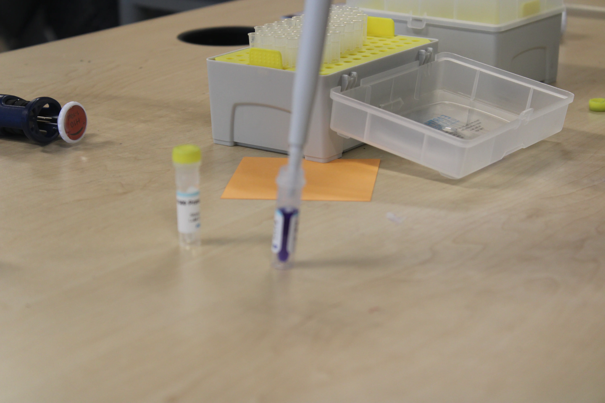

Step 1: Break Out the DNA First, you rub a cotton swab inside your cheek to grab some cells. You then swirl the swab in a tube of mixed buffers. The mixture with some heaat pops open the cells and their nuclei, releasing your DNA into the liquid like a bunch of tiny, tangled threads.
Step 2: Copy It. You can’t see just a few strands of DNA, so you need millions of copies. Using a machine that heats and cools the tube, an enzyme builds new copies of a specific DNA section over and over. In a couple of hours, billions of identical fragments are ready.
Step 3: Sort and See It. You load the copied DNA into one end of a Jell-O-like gel and Turn on the electricity. The negatively charged DNA races toward the positive side. Smaller fragments move fast, larger ones move slowly. After staining the gel, the separated DNA bands appear like a simple barcode—your unique DNA fingerprint, finally visible.
First, we used a swab to collect our cheek cell DNA. Later, we cut the swab into the test tube and mixed it with different buffers to extract and release the cheek cells' DNA. Then, after that, we were able to put the DNA mixture into a PCR machine that would multiply the DNA to billions using PCR amplification. Next, after taking out our DNA, we put it on a gel electrophoresis setup, and we watched as the DNA would slowly move across the gel. After that, we were able to stain the gel to obtain a clear image of where our DNA had reached. We were able to find out where our DNA was by using a ladder that told us which level the DNA had gotten to. After that, we measured the distance of the DNA, and we also used People's race to help identify who was similar to whom, and for some people, their predictions as to who they would be similar to were wrong,g but to some it was partially correct.


.webp) My Black Box Website
Github
My Black Box Website
Github